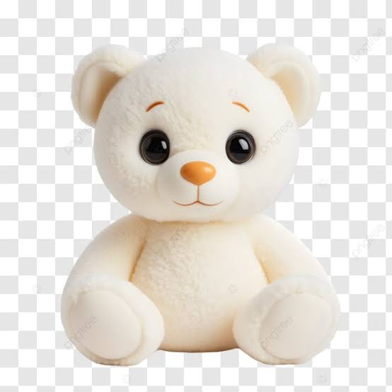

Meu lugar favorito é ao seu lado
Cada momento com você transforma um dia comum em uma lembrança especial.

Cada momento com você transforma um dia comum em uma lembrança especial.
Que nunca faltem motivos para sorrirmos juntos.
Hoje e em todos os dias que ainda vamos viver.
Bom desde que a gente se conheceu, você me trouxe muita alegria, diversão, raiva, esperança, entre outras coisas. Você foi a pessoa que acreditou em mim, uma das poucas que acreditou, mas também não deixou eu me passar e tentou me orientar para o caminho correto. Você me tornou uma pessoa melhor e diferente, tirando um pouco daquele meus comportamentos mimados e exagerados, claro que ainda estou melhorando mais já é um começo. Você me trouxe um motivo para eu viver, um objetivo a cumprir e me fez querer te proporcionar uma vida maravilhosa. Por isso e muito mais, eu te amo e quero passar o resto da minha vida com você, minha princesa.
Bom essa história eu já contei as vezes, mas é sempre bom relembrar. Quando eu te vi pela primeira vez no insta do samuel, eu te achei uma tremenda gostosa, com todo o respeito. Então eu te segui, mas vamos dizer que minha skin não colaborava, eu era meio feio. Mas estava no caminho. Quando a gente começou a conversar, eu não acreditei nas conheciências que a gente tinha, não é todo mundo que tem a sorte de encontra uma gatinha de TI. A conversa tava boa, divertida, muitas coisas em comun, quando eu percebi já começando a gostar de você. Dai chegou aquela segunda-feira abençoada, quando a gente se encontrou pela primeira vez, nunca vou esquecer do nervosismo daquele dia. Fazia tempo que eu não conversava com uma guria para ficar com ela e tu parecia perfeita, me deu uma leve vontade de ir embora, ainda mais quando tu ficou conversando com o professor (depois descobri que era porque tu também estava nervosa), aqueles 5 litros de água que tu tomou deve ta saindo de você ainda, mas com certeza, mesmo com os dois nervosos, a conversa tava até que boa e depois desse dia a gente começou a grudar um no outro, hoje a gente não consegue ficar 1 dia longe um do outro que já da saudade.
Bom não posso dizer que eu vivo com você, mas posso dizer que a gente se vê quase todos os dias e isso é maravilhoso. Mas as vezes é complicado, você é a garota dos meus sonhos, mas também é meio maluca e sentimental, eu adoro esse jeitinho e acho que não vivo sem ele. Mas não deixa de ser complicado, ainda mais quando você tá de TPM, ai o bagulho azeda para mim, mas faz parte e nem por isso vou te deixar, porque PUTA QUE PARIU, como eu te amo mulher. Mas enfim ter você ao meu lado é tudo que eu mais queria, você é companheira, amável, carinhosa, fofa, linda, maravilhosa, confiável, ciumenta, engraçada, divertida, energética, inteligente, madura, disciplinada, preguiçosa e muitas outras coisas que eu não consigo nem descrever.
Mesmo não sendo o dia oficial, eu levo esse dia como o dia mais importante na minha vida, porque foi nesse dia que tudo mudou, a minha vida inteira virou de ponta cabeça e você entrou nela para me ajudar a superar essas novas dificuldades que iria encontrar. Nesse a gente só tendo uma interração breve e bom mensagens, aquele dia foi quando eu conheci a pessoa mais importante da minha vida, e nunca vou esquecer aquela cantada muito boa que eu te dei, vai dizer sou criativo né. Até hoje eu fico triste por não ter conseguido te pedir em namoro no dia 21 :( .